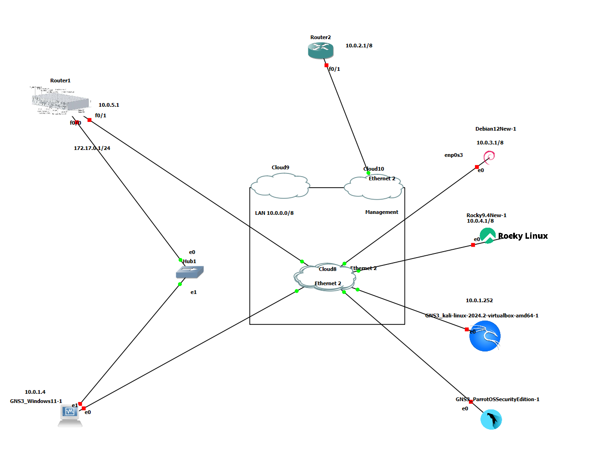

Home Lab
Importância de um Homelab para Estudo de Cibersegurança
Criar um homelab (laboratório caseiro) é uma excelente maneira de estudar cibersegurança porque oferece um ambiente controlado para testar ferramentas, aprender conceitos e simular cenários do mundo real sem comprometer a segurança de outras redes. Aqui estão algumas razões pelas quais é importante para o estudo da cibersegurança:
1. Ambiente de Aprendizagem Prático
No homelab, você pode experimentar vulnerabilidades, ataques e defesas de forma prática, o que é fundamental para solidificar o conhecimento teórico. Isso inclui simular ataques de pen testing, implementar firewalls, estudar forense digital, entre outros.
2. Erro sem Consequências Reais
Ao contrário de ambientes de produção, cometer erros em um homelab não traz consequências graves, o que permite aprender com falhas sem impactar terceiros.
3. Simulação de Redes Corporativas
Você pode configurar uma rede complexa, incluindo servidores, estações de trabalho, roteadores e firewalls, para simular um ambiente corporativo, aprendendo a proteger infraestruturas de TI.
4. Experiência com Ferramentas Profissionais
Um homelab permite o uso de ferramentas de cibersegurança amplamente utilizadas na indústria, como o Wireshark, Metasploit, Kali Linux, Snort, entre outros.
5. Desenvolvimento de Habilidades em Virtualização
O uso de máquinas virtuais (VMs) para simular diferentes sistemas operacionais e redes é comum. Isso ajuda a ganhar experiência com hypervisores, como o VirtualBox, VMware, e ferramentas de orquestração, como o Docker.
6. Aprendizado de Automação e Gestão de Sistemas
Criar scripts de automação, implementar ferramentas de monitoramento e gerenciamento de sistemas, como o Ansible ou o Nagios, pode ser explorado para aumentar o conhecimento em administração de sistemas e resposta a incidentes.
7. Exploração de Vulnerabilidades em um Ambiente Seguro
Você pode testar explorações conhecidas e desconhecidas, estudar patches e atualizações de segurança e entender como vulnerabilidades afetam sistemas reais.
8. Preparo para Certificações
Muitos laboratórios de cibersegurança são projetados para preparar alunos para certificações como CEH (Certified Ethical Hacker), OSCP (Offensive Security Certified Professional), CISSP (Certified Information Systems Security Professional), entre outras.
Com um homelab, o aprendizado é flexível e adaptado às suas necessidades e ritmo.
GNS3
Graphical Network Simulator-3 é um emulador de software de rede lançado pela primeira vez em 2008. Ele permite a combinação de dispositivos virtuais e reais, usados para simular redes complexas. Ele usa o software de emulação Dynamips para simular o Cisco IOS.

Cenários de Cibersegurança num Homelab
1. Pentesting (Teste de Invasão)
Objetivo: Testar vulnerabilidades em sistemas e redes.
Ferramentas: Kali Linux, Metasploit, Nmap, Wireshark.
Cenário: Criar uma rede com máquinas vulneráveis, como o Metasploitable, para testar diferentes técnicas de invasão.
2. Configuração de Firewalls e IDS/IPS
Objetivo: Configurar firewalls e sistemas de detecção/prevenção de intrusões.
Ferramentas: pfSense, Snort, Suricata.
Cenário: Simular ataques e monitorar o tráfego para verificar como o firewall e o IDS/IPS respondem.
3. Análise de Malware
Objetivo: Desmontar e estudar o comportamento de malwares.
Ferramentas: Cuckoo Sandbox, Remnux.
Cenário: Analisar o comportamento de arquivos suspeitos em um ambiente isolado para entender como funcionam.
4. Simulação de Ataques DDoS
Objetivo: Testar a resiliência de servidores frente a ataques de negação de serviço.
Ferramentas: LOIC, HOIC, ferramentas personalizadas.
Cenário: Configurar uma rede de servidores e aplicar simulações de DDoS para analisar o impacto e as defesas.
5. Criação de Honeypots
Objetivo: Atrair e identificar atividades maliciosas em uma rede.
Ferramentas: Cowrie, Dionaea, Kippo.
Cenário: Implantar honeypots em uma rede para capturar tentativas de invasão e estudar as táticas dos invasores.